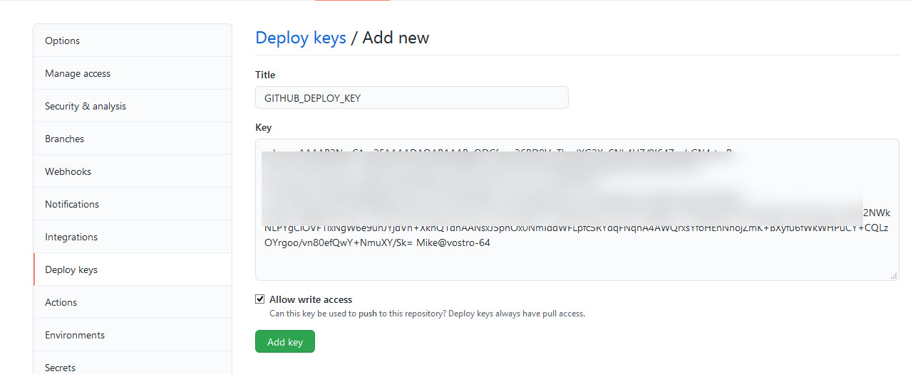
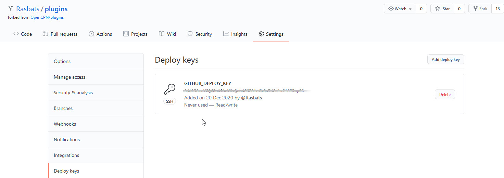
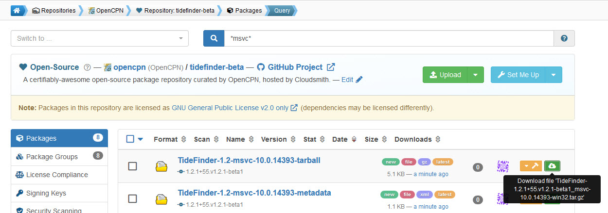

Backup
Before making any changes to the master branch of your plugin make another branch. This will act as a backup of the state of your plugin before moving to the managed workflow.
Two Rasbats GitHub repos are involved in the managed build. * TideFinder_pi * plugins
TideFinder_pi
The changes to the plugin files have been shown here. They are pushed to the Rasbats GitHub repository.
The plugins fork repository
This Rasbats GitHub repo is a fork of opencpn/plugins: https://github.com/opencpn/plugins.
Master catalog builds
Create an `auto' branch. By default this is a clone of the master branch. The auto branch of plugins will receive the plugin metadata files made by the builders. After the builds the auto branch is merged with the master to allow a pull request to OpenCPN/plugins. The metadata files for TideFinder are added to the Master catalog.
Beta catalog builds
Delete the auto branch if it exists. Create a new auto branch based on plugins/Beta.
-
$ git branch -D auto (drop the auto branch completely)
-
$ git remote update upstream (Better safe than sorry)
-
$ git checkout -b auto upstream/Beta (Create a new auto branch based on Beta)
-
$ git push -f origin auto:auto (unconditionally overwrite the github branch)
After the builds the auto branch is merged with the Beta to allow a pull request from this branch to OpenCPN/plugins/Beta. The metadata files for TideFinder are added to the Beta catalog.
Providing the link to your opencpn/plugins fork
Run the script ci/new-credentials in the TideFinder repo. The script
will ask for the ssh url to your plugins fork repo and a secret
password.

-
Dont forget the password…
-
The script will create an encrypted private + a public key in the ci directory. Commit and push these to Github TideFinder.
-
Register the new public key (displayed by new-credentials) as a deployment key with write permissions (Allow write access) on your github OpenCPN plugins fork repo (in Settings | Deploy keys)


Building the plugin
Checks * Have the environment variables been entered for CircleCI, Travis and Appveyor?
-
Has a deploy key (with write permissions) been added to your OpenCPN/plugins fork repo?
-
Are the Cloudsmith repos ready to receive your builds?
Building
When the changes have been made to the plugin it is a good idea to make an untagged build. The builds will arrive in the Cloudsmith opencpn/tidefinder-alpha repository. The plugin can be tested for functionality by using the Import plugin… button in OpenCPN.
The untagged build metadata files are not pushed to the auto branch of your GitHub OpenCPN/plugins fork repo.
Now a tagged beta build can be made. The tag name needs to include the word `beta'. For example `v1.2.5-beta' This build pushes the plugin tarballs and metadata xml files to Cloudsmith opencpn/tidefinder-beta. At the same time the metadata files are pushed to the auto branch of your GitHub OpenCPN/plugins fork repo.

The beta build can be tested in the same way as the experimental untagged version. Use the Import plugin… button in OpenCPN.
When you want the plugin to be added to the master catalog another tagged build is made. The tag name must not contain `beta'. For example `v1.2.5'. The source code for tagged builds, either beta or production ends up in GitHub TideFinder repo tag pages. The reason for using untagged builds initially is to avoid cluttering up this part of your GitHub repo. Unwanted tags can be removed using this technique
pull request from plugins
Before making the pull request to OpenCPN/plugins make sure your fork of this is up to date. This guide has been found useful.
The builders will make commits in your plugins fork auto branch, one for each build. These commits are the metadata files which work with the plugin installer of the main OpenCPN program. In beta and production mode they become part of the beta and master catalogs of plugins in OpenCPN.
Master catalog
If you are adding the metadata files from your plugins auto branch to your OpenCPN/plugins fork master branch it goes like this:
This may be needed to sync the master branch:
* $ git checkout master * $ git rebase upstream/master
Then:
* $ git checkout auto * $ git rebase master * $ git checkout master * $ git merge --squash auto * $ git commit * $ git push
A PR (pull request) can then be made from your plugins master branch for updating the master catalog of OpenCPN/plugins.
Beta catalog
If you configured for Beta metadata files you need:
* $ git checkout auto * $ git rebase Beta * $ git checkout Beta * $ git merge --squash auto * $ git commit * $ git push
The new TideFinder metadata files have been added to your OpenCPN/plugins fork Beta branch. A PR results in updating the Beta catalog of OpenCPN/plugins, if it is accepted.